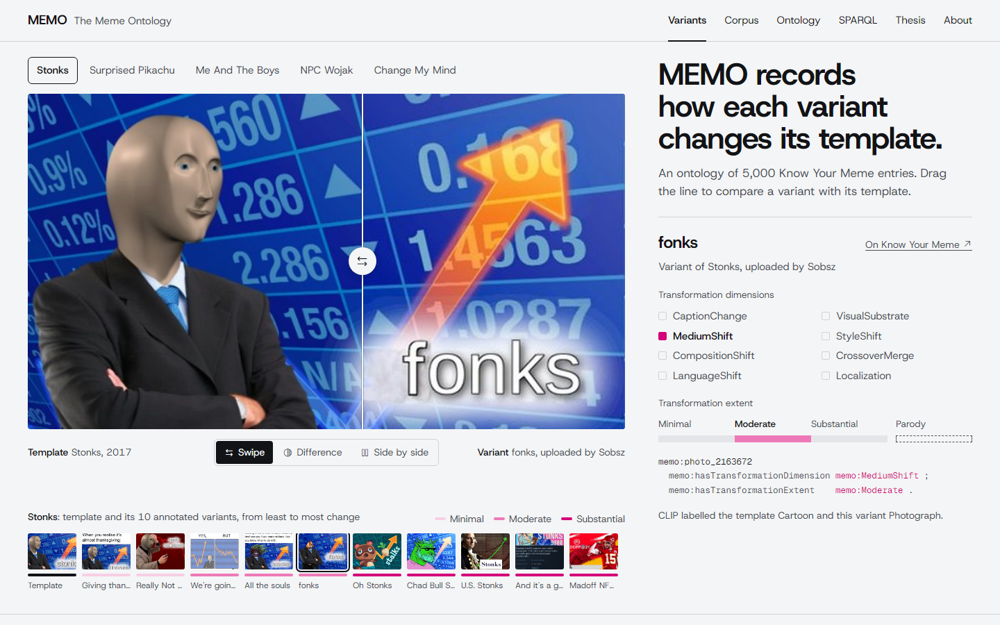
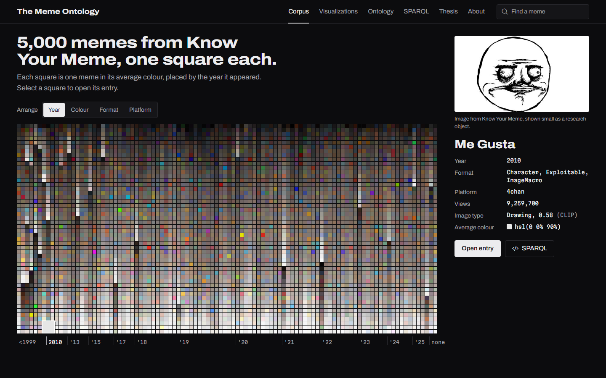
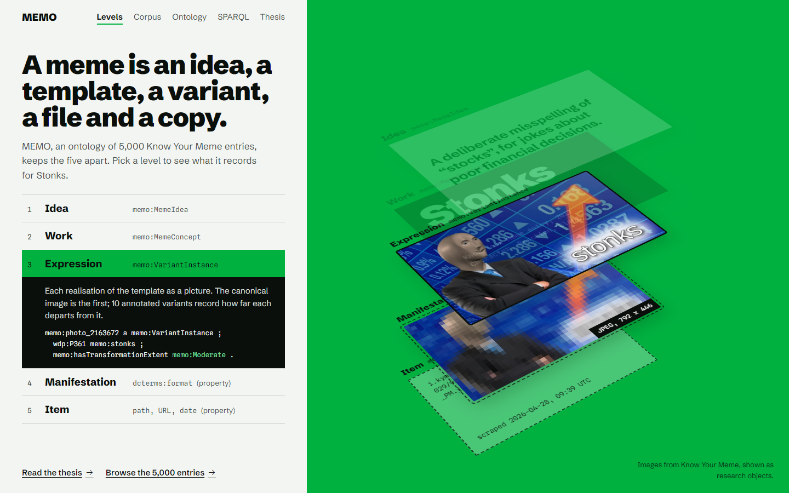

Recommended
A. Swipe
Every variant held against its template, with the annotation beside it. Swipe, Difference and Side by side views; a matrix of eight dimensions by fifty variants.
Static mockups with the site's real data. Each has a home page and one inner page; screenshots at 1440 x 900 and 390 x 844 are in each folder's shots. The reasoning and the recommendation are in README.md.

Every variant held against its template, with the annotation beside it. Swipe, Difference and Side by side views; a matrix of eight dimensions by fifty variants.

All 5,000 entries as squares in their average colour; every view is made of the same squares, which move when the view changes.

Stonks taken apart into idea, template, variant, file and copy, the levels the ontology keeps separate, on a chroma-key green stage.